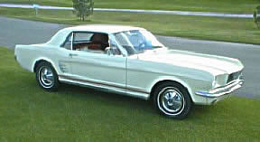
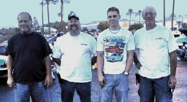

In Memory of  "Travis Allen Smith" "Travis Allen Smith" |
|
I met Travis in August of 2001 on the Ford Six Forum. It didn't take long for the two of us to develop a father-son type relationship, only better in many ways. Travis was a bright young man who had just moved to Mesa. He lived with his father, step mother, and little brother, and was attending the local Jr College. He loved cars and everything that had anything to do with them, but he especially loved his white sixty-six Mustang coupe. While he didn't know much about them, he was very eager to learn. We spent several weekends attending local car shows, working on our Mustangs, or just chatting about all the ideas we had for hopping up the motors.
|

One Saturday afternoon, after going to a classic car show, we stopped by the local Mustang Shop to pick up some parts for my sixty-seven coupe. While we were there, Travis asked the owner if they had an opening for a part time position. The owner told Travis he would think about it, so for the next two weeks he stopped by every day after school. He even went so far as to tell the owner he would work for free, not only to get some experience, but more importantly so he could learn from the pros. The owner later told me that while they didn't need help, he decided he would be a fool if he didn't hire such an enthusiastic young man. Needless to say Travis got the job, and a paycheck.
After that I didn't see him nearly as often as he spent every spare moment at the shop, working on a customer's car, or his own when time and money permitted. It didn't take long for him to become the in-house expert on inline sixes. What he didn't know, he would find out by reading shop manuals, searching the internet, or asking the guys on the forum. The shop owner was so impressed with Travis, that they decided to order uniforms for him, even though company policy stated employee's had to be full time to get them.
With his summer vacation just a few weeks away, they decided not to tell him. Instead they would wait for the uniforms to arrive and surprise him when he returned home. They knew how proud he would be, and that only then, would he feel like he was officially part of the crew.
Travis saved most of the money he earn so he could take his summer vacation. He was going up to Colorado to visit his mother and his younger bother and sisters that lived with her. He also set aside a little money to prepare his Mustang for the long trip. He wanted to hop up the motor with a few performance goodies before he left, but decided it would be best to wait until he got back. Unfortunately he never got the opportunity to build his motor, or to see his new uniforms. He did however, wear his uniform the day of his funeral, and he looked great in it.
|
On Fathers Day 2002, while returning home from his Colorado vacation, his Mustang was hit head on in a two car accident just south of Moab, Utah. It was early in the morning, around 7am, when he crested a slight hump in the highway just a few yards south of the famous landmark called Rainbow Bridge. The driver of a northbound 2002 T-Bird had fallen |
asleep at the wheel, after driving all night transporting illegal aliens up from Mexico. The T-bird crossed over the center line and hit Travis head on. The Highway Patrol said both cars were traveling around 80 miles per hour, and that it was one of the worst head-on collisions they had ever witnessed. Travis and a female passenger in the T-Bird were killed instantly. The driver and three male occupants in the T-Bird survived, but all were hospitalized for several weeks. |
 |
The following weekend a fellow forum member and myself made the eight hour trip to Moab to pick up his personal belongings, as a favor to the family. While we were there we stopped at the site of the accident, and made a trip over to the storage yard where his Mustang was towed. We wanted to salvage any parts we could, but only the tail lights, reverse lights, gas cap, and a couple hubcaps were worth saving. I was shocked at the sight of the car, and it made me realize just how dangerous these old classic cars really are. Unfortunately they lacked any safety features, other than seat belts, up until 1968 when collapsible steering columns and shoulder harnesses were introduced. Considering the severity of the accident, I doubt either would have made a difference, but I'll always wonder. I even questioned if a newer Mustang with air bags, and all the other safety features, would have made a difference in the outcome? At least they may have given him a fighting chance, as he had absolutely none in his beloved classic Mustang. |
In the photo above, you can see a mark (on the white stripe), where the point of impact occurred. You can also see where his Mustang came to rest, just a few feet away. That's an awful short distance (about 22') to go from 80mph to zero. It also gives you an idea just how violent the collision was.
I posted these accident photos in memory of my good friend, Travis Allen Smith, with the hopes that they help other classic car owners realize the dangers in driving a classic Mustang.
We all know that street racing is extremely hazardous, regardless of the vehicle driven. However in a classic car, it's nothing short of Russian Roulette. So next time your sitting at a stop light, thinking about racing that dude sitting next to you, please take a few minutes to think about these pictures. They just might save your life. If your building a classic car for your son or daughter, please spend your money on safety modifications first, before you spend a single penny buying performance parts from Classic Inlines.
|
In Memory of
Travis
Allen
Smith
1983-2002 |
 |
| |
Don, Rich, Travis, and myself at the Pavilions - Sept 2001 |
|
|